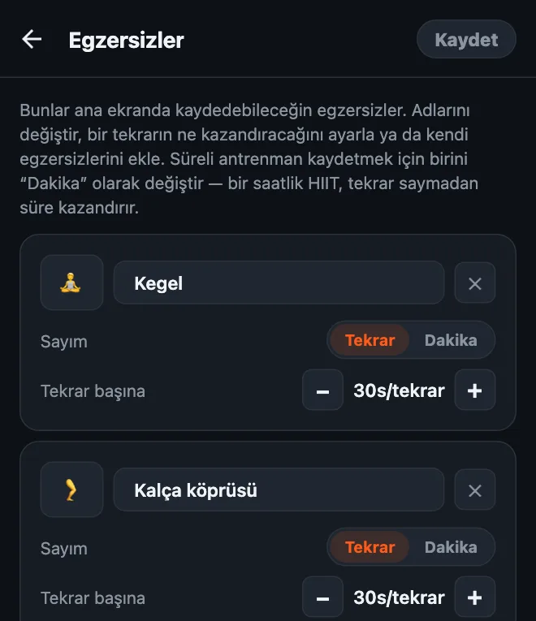
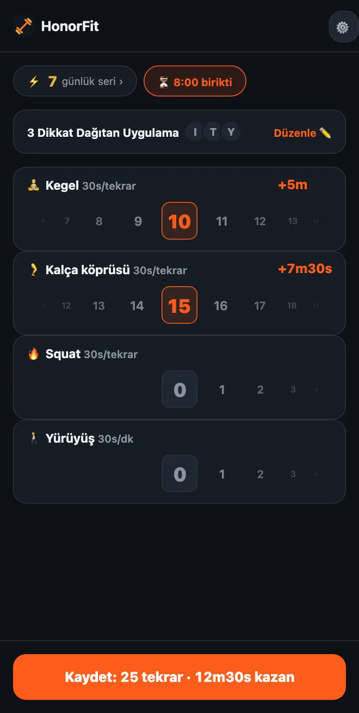

Telefonunun kilidini Kegel egzersiziyle aç
Selam millet! HonorFit'i yaptım, çünkü Instagram ile aramda şınav olsun istiyordum, ama kamera saysın diye telefonu bir yere dayamadan (bunu bir benzin istasyonunda yapmak hayatımın en parlak anı değildi, haha). Tekrarları yapıyorsun, kendin kaydediyorsun ve uygulamaların açılıyor.
Ama şınav herkesin harcı değil. Üstelik bu fikre en iyi uyan egzersizlerden biri şınav bile değil: Kegel egzersizi ve kalça köprüsü. Nedenini ve nasıl kurulacağını anlatayım.
Kegel neden onur sistemine bu kadar iyi uyuyor
Kegel'i kimse göremez. Ne otobüste yanında oturan, ne iş arkadaşların, ne de kesinlikle bir telefon kamerası. Tekrarları kamerayla sayan bir uygulama bunları kelimenin tam anlamıyla sayamaz.
HonorFit denemiyor bile. Onur sistemiyle çalışıyor: egzersizi yapıyorsun, çarkı kaç tane yaptıysan oraya çeviriyorsun, bitti. Yani TikTok süreni bir toplantıda, markette sırada ya da kanepede kazanabilirsin ve kimsenin haberi olmaz.
Bir de herkesin Kegel hakkında söylediği şeyi çözüyor: “Yapmam gerektiğini biliyorum, ama hep unutuyorum.” Gün içinde telefonuna defalarca uzanıyorsan (yargılamıyorum, ben de öyleyim), artık her biri bir hatırlatıcı.
Kalça köprüsü görünmez değil ama yerde, hatta yatakta bile kolayca yapılıyor, ekipman gerektirmiyor ve Kegel'le çok iyi gidiyor.
Nasıl kurulur
1.15.0 sürümünden itibaren bu ücretsiz: Pro olmadan 3 taneye kadar kendi egzersizini ekleyebilirsin, Kegel egzersizi ve Kalça köprüsü de tek dokunuşluk öneriler arasında. (Pro, ABD'de aylık 3 dolar ya da tek seferlik 19,99 dolar, bunu sınırsız yapıyor; fiyatlar ülkeye ve para birimine göre değişiyor, mağaza sana kendi fiyatını gösterir.) Şöyle yapılıyor:
- Ana ekrandaki dişli simgesine, sonra Egzersizler kartına dokun.
- Kegel egzersizi önerisine, sonra Kalça köprüsü'ne dokun. Bir şey yazmana gerek yok, kendi emojileriyle geliyorlar: Kegel için 💎, köprü için de, evet, 🍑.
- Tekrar başına değerini −/+ düğmeleriyle ayarla (önerilerim aşağıda).
- Kullanmayacaklarını ✕ ile sil (barfiks olabilir mi?) ve Kaydet'e dokun.

Süreli antrenmanlar dahil düzenleyicinin tam anlatımı HonorFit'te egzersizlerini nasıl özelleştirirsin yazısında.
Her tekrar ne kadar ekran süresi kazandırmalı?
Ben şununla başlardım:
| Egzersiz | Tekrar başına | Tipik bir set |
|---|---|---|
| 💎 Kegel | 30 saniye | 10 Kegel = 5 dakika |
| 🍑 Kalça köprüsü | 30 saniye | 15 köprü = 7m30s |
| 🚶 Yürüyüş (süreli) | Dakika başına 30 saniye | 20 dakikalık yürüyüş = 10 dakika |
Yani 10 Kegel artı 15 köprüden oluşan bir set sana yaklaşık 12 buçuk dakika kazandırır. Oradan ince ayar yap. Süre çok kolay birikiyorsa değerleri düşür. Yapmadığın tekrarları kaydettiğini fark edersen fiyat fazla yüksek demektir, onu da düşür.

Kegel hakkında bir şey: fazlası daha iyi değil. MedlinePlus ve Cleveland Clinic gibi sağlık siteleri (İngilizce) genelde günde birkaç kez, 10 civarında tekrardan oluşan setlerden bahsediyor ve abartmanın kasları fazla gergin bırakabileceğini söylüyor. Yani lütfen bunu bir saatlik YouTube için 100 Kegel'e çevirme! Bu yüzden ben Kegel'e tekrar başına makul bir değer verir, büyük süreleri kalça köprüsüne, squat'a ya da yürüyüşe bırakırdım.
Temel hareketler
Ben bir uygulama geliştiricisiyim, antrenör ya da fizyoterapist değilim; bu yüzden bu sadece genel fikir. Yukarıdaki bağlantılarda düzgün talimatlar var.
- Kegel: çişini tutmak için kullandığın kasları sık, birkaç saniye tut, sonra birkaç saniye tamamen gevşet. Bu bir tekrar. Nefes almaya devam et ve karnını, uyluklarını ya da kalçanı sıkmamaya çalış. (Çişi yarıda kesmek, kasları bir kere bulmanın bir yolu; düzenli olarak yapılacak bir şey değil.)
- Kalça köprüsü: dizlerin bükülü ve ayakların yerde düz olacak şekilde sırtüstü uzan. Kalça kaslarını sık ve vücudun omuzlarından dizlerine düz bir çizgi oluşturana kadar kalçanı kaldır, bir an bekle ve yavaşça indir. Bu bir tekrar. Bazıları en üstte bir Kegel eklemeyi seviyor.
Hamileysen, yeni doğum yaptıysan, pelvik ağrın varsa ya da Kegel canını acıtıyorsa, önce doktoruna ya da bir pelvik taban fizyoterapistine danış. Vücudun için neyin doğru olduğunu onlar söyleyebilir; bazen cevap “şimdilik Kegel yok” olur ve bu gayet normal. HonorFit'i onların önerdiği başka hareketlerle de kurabilirsin.
Birkaç ipucu
- Üç dört egzersizde kal. Kegel, Kalça köprüsü, Squat ve Yürüyüş gibi bir kombinasyon otururken, uzanırken ve dışarıdayken işini görür. Her birinin kendi çarkı var, o yüzden ne kadar az o kadar kolay.
- Dışarı çıktığın günler için süreli antrenman kullan. Bir egzersizi Dakika'ya çevir (ya da Yürüyüş veya Yoga önerisine dokun), böylece bir yürüyüş ya da ders de süre kazandırsın.
- Kayıtlı rutinler (Pro, Ayarlar'dan açılıyor) “10 Kegel + 15 köprü” gibi en fazla 3 tekrar kombinasyonu kaydetmeni ve tek dokunuşla uygulamanı sağlar.
- Her şeyi değil, bir iki uygulamayı engelle. Akşamlarını hangisi yiyorsa onu.
Kegel de sana göre değilse düşük etkili ve masa başında yapılabilen seçenekleri de yazdım.
HonorFit Blocker, iPhone ve Android için ücretsiz bir uygulama engelleyici. Onur sistemi, kamera yok, hiçbir şey telefonundan çıkmıyor. Kegel, kalça köprüsü ve 3 taneye kadar özel egzersiz ücretsiz. Belki bazılarınızın hoşuna gider!